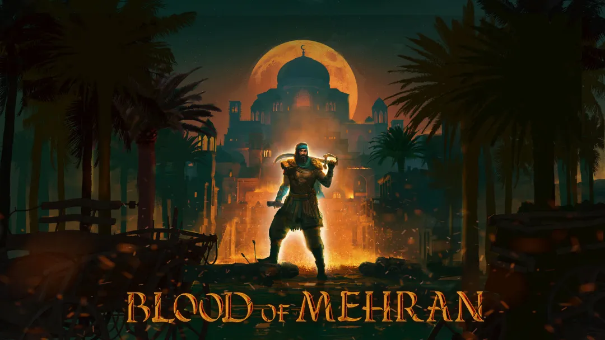

Blood of Mehran Game Revealed with Trailer
Permanent Way Entertainment studio has officially revealed the game Blood of Mehran with a new trailer.
Blood of Mehran is an action-adventure game developed by Permanent Way Entertainment and will be published by Blowfish Studios.
In the game, players take on the role of Mehran, a character seeking justice and battling enemies through various challenges. According to the developers, players can expect a game filled with detailed combat, hidden secrets, and intriguing plot twists.
While Blood of Mehran does not have an exact release date yet, players will be able to try out a demo during the Steam Next Fest, which takes place from October 15 to November 1. The game will be available on PC (via Steam and Epic Games Store), PlayStation 5, and Xbox Series X|S.
In Blood of Mehran, players can engage in combat with a variety of weapons and equipment, such as swords, shields, and bows, while battling a range of enemies and bosses. Through a skill tree, players can customize their playstyle and abilities.
The world and story of the game are inspired by Middle Eastern folklore and tales from One Thousand and One Nights. The environments include desert regions, castles, and mansions, where Mehran’s story unfolds, involving themes of love and revenge.